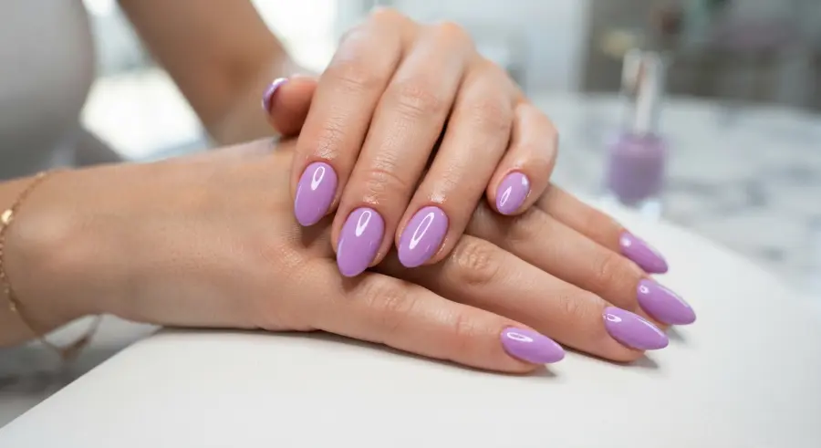
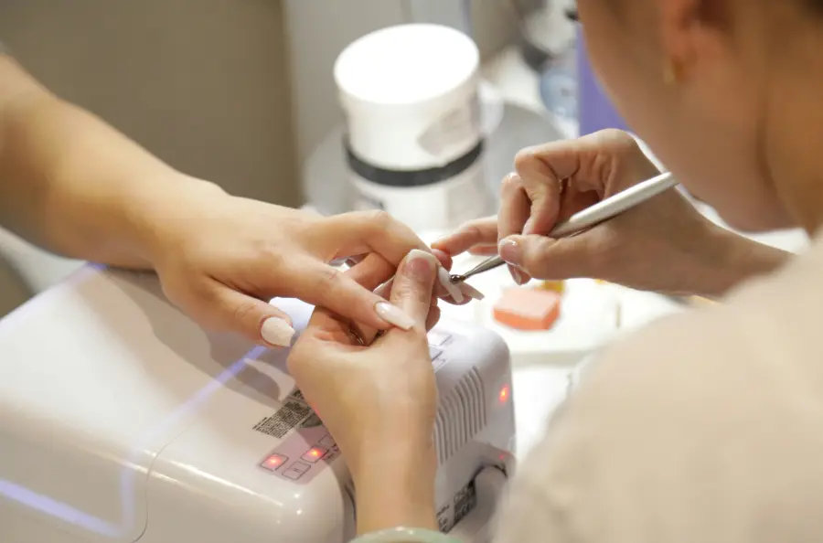
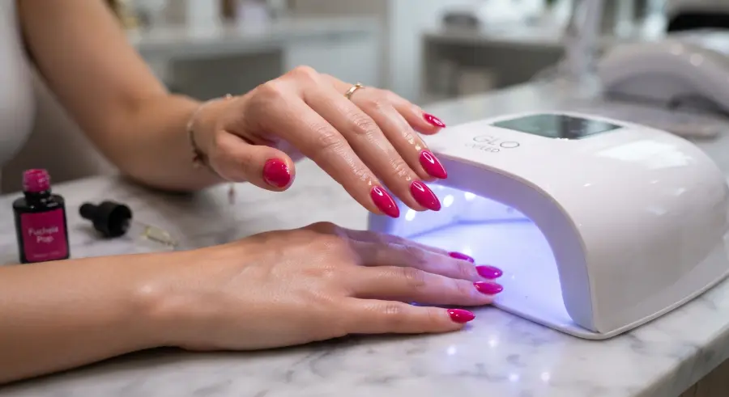
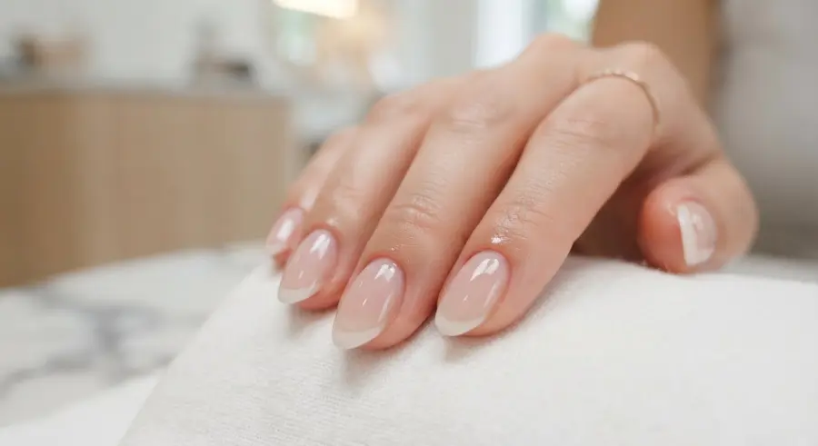

Manicuría Rusa
Limpieza profunda e impecable de cutículas mediante torno y torno-alicate, logrando un acabado perfecto y de mayor durabilidad.
Acabado Prolijo
Un espacio pensado para mimarte, relajarte y renovar tus uñas. Especialista en Manicuría Rusa, Semipermanente y Kapping.
Atención personalizada con dedicación en gabinete.
Técnicas adaptadas a lo que tus uñas necesitan para lucir fuertes, sanas y bellas.

Limpieza profunda e impecable de cutículas mediante torno y torno-alicate, logrando un acabado perfecto y de mayor durabilidad.
Acabado Prolijo
Cuidado clásico para tus manos con limado, perfilado, hidratación profunda de cutículas y esmaltado tradicional a tu elección.
Cuidado Clásico
Color intenso y secado inmediato en cabina LED. Disfrutá de un acabado brillante e intacto por más de 15 a 21 días.
Larga Duración
Fina capa de gel o acrílico sobre tu uña natural para protegerla contra quiebres y permitir que crezca fuerte y saludable.
Protección & FuerzaDesde siempre creí que las uñas son mucho más que un detalle: son una forma de expresar nuestra personalidad y, muchas veces, de sentirnos más lindas y seguras de nosotras mismas. Soy de esas personas que, cuando tiene las uñas arregladas, automáticamente se siente más linda.
Además de dar mis primeros pasos en este hermoso mundo de las uñas, soy Técnica Superior en Acompañamiento Terapéutico , por eso nace Mi Ciela Nails: desde el amor por el cuidado personal, los pequeños detalles y esa sensación tan linda de mirarte las manos y pensar “qué lindas me quedaron”.
“Creé este gabinete para brindarte la atención dedicada y amorosa que tus manos se merecen. Gracias por confiar en mí para cuidar de vos.”
Un espacio cálido y exclusivo preparado para que te relajes mientras renovás tus manos. Turnos programados con anticipación para brindarte una atención 100% personalizada.